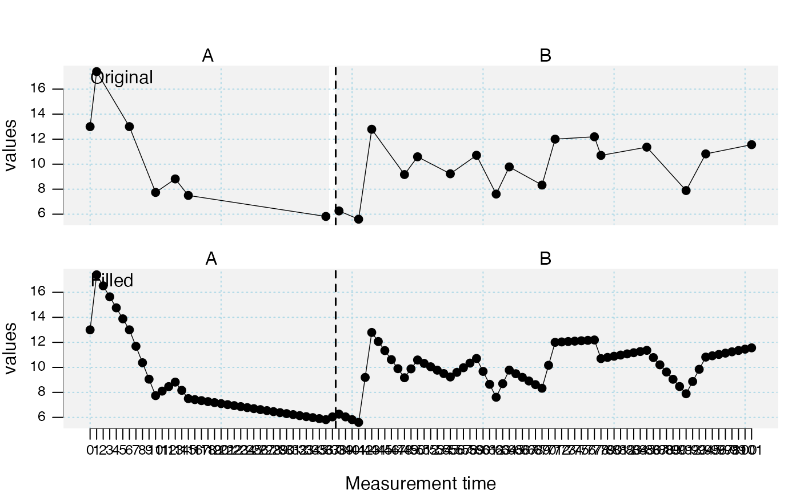

fill_missing.RdThe fillmissingSC function replaces missing measurements in
single-case data.
fill_missing(data, dvar, mvar, interpolation = "linear", na.rm = TRUE) fillmissingSC(...)
| data | A single-case data frame. See |
|---|---|
| dvar | Character string with the name of the dependent variable. Defaults to the attributes in the scdf file. |
| mvar | Character string with the name of the measurement time variable. Defaults to the attributes in the scdf file. |
| interpolation | Alternative options not yet included. Default is
|
| na.rm | If set |
| ... | Further arguments passed to the function. |
A single-case data frame (SCDF) with missing data points
interpolated. See scdf to learn about the SCDF Format.
This procedure is recommended if there are gaps between measurement times
(e.g. MT: 1, 2, 3, 4, 5, ... 8, 9) or explicitly missing values in your
single-case data and you want to calculate overlap indices
(overlapSC) or a randomization test (randSC).
Other data manipulation functions:
longSCDF(),
outlier(),
ranks(),
shift(),
smooth_cases(),
standardize(),
truncate_phase()
## In his study, Grosche (2011) could not realize measurements each single week for ## all participants. During the course of 100 weeks, about 20 measurements per person ## at different times were administered. ## Fill missing values in a single-case dataset with discontinuous measurement times Grosche2011filled <- fill_missing(Grosche2011) study <- c(Grosche2011[2], Grosche2011filled[2]) names(study) <- c("Original", "Filled") plot(study, style = "grid")## Fill missing values in a single-case dataset that are NA Maggie <- rSC(design_rSC(level = list(0,1)), seed = 123) Maggie_n <- Maggie replace.positions <- c(10,16,18) Maggie_n[[1]][replace.positions,"values"] <- NA Maggie_f <- fill_missing(Maggie_n) study <- c(Maggie, Maggie_n, Maggie_f) names(study) <- c("original", "missing", "interpolated") plot(study, marks = list(positions = replace.positions), style = "grid2")